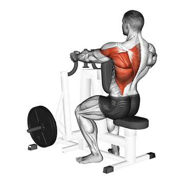
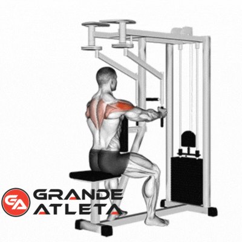
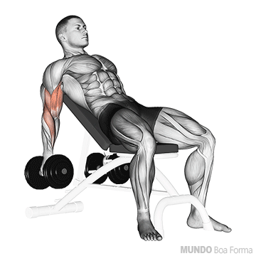

TERÇA-FEIRA
PULL
Puxada Frontal

3 séries / 6-8 repetições / 2-3' descanso
Puxada Triângulo

3 séries / 10-15 repetições / 2-3' descanso
Remada Unilateral Maquina
3 séries / 10-15 repetições / 2-3' descanso

Deltoide Posterior Maquina/Crucifixo Inverso
2 séries / 10-15 repetições / 2' descanso

Rosca Barra W

2 séries / 12-15 repetições / descanso
Rosca Alternada Banco Inclinado
3 séries / 10-15 repetições / 2' descanso
